最全Pycharm教程（4）——有关Python解释器的相关配置
最全Pycharm教程（6）——将Pycharm作为Vim编辑器使用
最全Pycharm教程（8）——Django工程的创建和管理
最全Pycharm教程（9）——创建并运行一个基本的Python测试程序
最全Pycharm教程（11）——Pycharm调试器之断点篇
1、总览
对于Web开发而言，调试Java脚本是十分重要的。为了显示Pycharm对于Java脚本的强大调试能力，我们这里创建一个非常简单的脚本，用以展示一些简单的浏览器页面，然后在服务器上对其进行调试。
为了能够在外部服务器上进行调试，需要在上面运行程序文件，同时在你的电脑上拷贝一份。不过没关系，无论Web服务器是运行在物理远端还是运行在你的电脑上，其中的应用程序都可以看成是一个远程服务程序。
当一个使用JavaScript生成的远程文件打开时，调试器会告诉Pycharm当前处理文件的名称以及对应的行号。Pycharm会打开本地副本并定位到相应的行。Pycharm的这种行为使得服务端和客户端的文件进程保持同步。这种通信机制成为映射（mapping），在debug配置文件中保留了相关的设置信息。
2、准备工作
（1）Pycharm版本为3.0或者更高。
（2）使用谷歌浏览器（这篇教程是基于谷歌Chorme的）
（3）你已经安装了JetBrains IDE Support外部插件。如果你是第一次加载调试器，Pycharm会给出你关于安装JetBrains IDE Support外部插件的重要性。
举个例子，对于浏览器，当在地址栏的右侧显示图标，并且非透明，说明插件已经安装并且成功激活。
可以在https://chrome.google.com/webstore/detail/jetbrains-ide-support/hmhgeddbohgjknpmjagkdomcpobmllji下载和安装JetBrains IDE Support外部扩展。
建议使用XAMPP作为服务端程序（文章是针对XAMPP的）。
3、创建一个简单的工程
在主菜单中选择File→New Project，选择一个空工程，命名为MyJSProject：
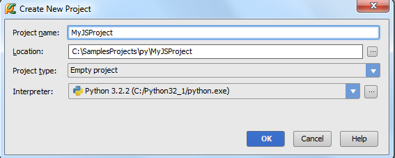
在一个独立的窗口中打开这个工程：
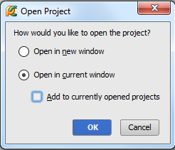
4、实例准备
首先，创建一个HTML页面。在工程管理窗口中按下Alt+Insert，在弹出的快捷菜单中选择HTML文件类型，命名为numbers：
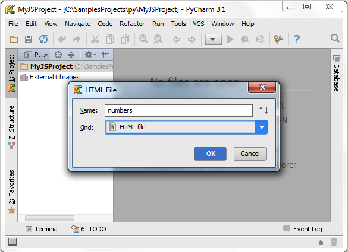
Pycharm会在生成的HTML文件中添加一些原始内容。接下来，向其中嵌入一个JavaScript文件，在<body>标签下输入一下代码：
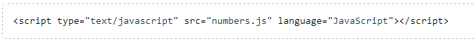
在输入代码时注意体会Pycharm的拼写提示功能：
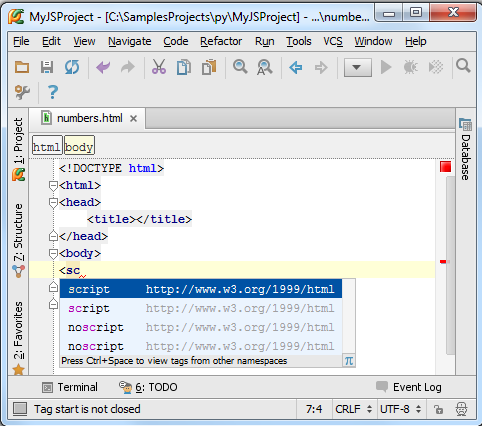
完成后，注意文件名numbers.js以高亮的形式给出。这说明当前的JavaScript文件不存在。在将光标定位在名称“numbers”上，按下Alt+Enter（或者单击左侧的小黄色灯泡）；会给出快捷提示——创建一个缺省文件：
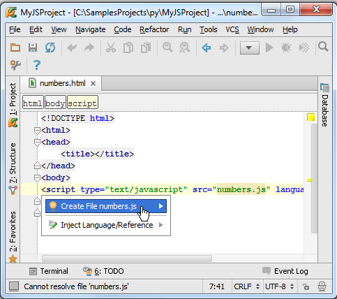
通过这个快捷方法，已将创建好了原始的JavaScript文件，接下来输入下面代码：
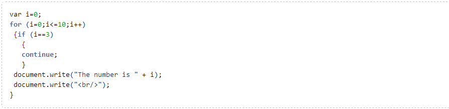
5、设置断点
接下来在JavaScript文件中插入断点，非常简单，在右侧单击即可：
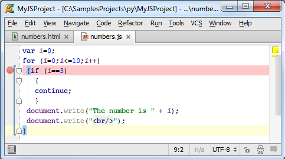
6、配置服务器
7、创建一个服务器
打开Settings/Preferences对话框（Ctrl+Alt+S或者单击主菜单的设置按钮），单击Deployment page页面的绿色的加号，将服务器命名为MyRemoteServer，指定类型为local or mounted server。
8、配置映射连接
接下来配置创建的服务器。在Connection选项卡中，输入需要加载的本地文件的目录，这里为C:\xampp\htdocs，也就意味着将从这个目录来上传本地文件：
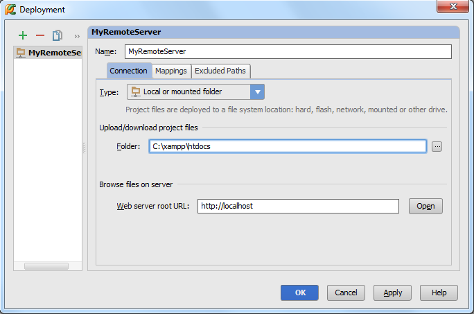
单击Mappings选项卡，在这里定义本地路径，服务器的部署路径（与Connection选项卡的设置相同），以及服务器的Web路径：
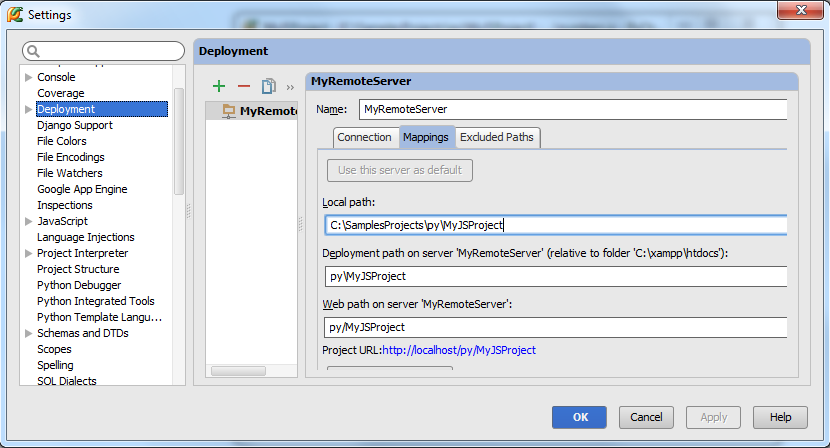
9、定义项目的默认服务器
指定创建的服务器为当前项目的默认服务器，只需在Deployment toolbar中单击按钮。
10、预览服务器
接下来需要确认我们的服务程序能够在Pycharm的可视化窗口中顺利上传和运行。在主菜单中选择Tools → Deployment → Browse Remote Hosts。远程Host控制窗口会显示当前新开启的服务：
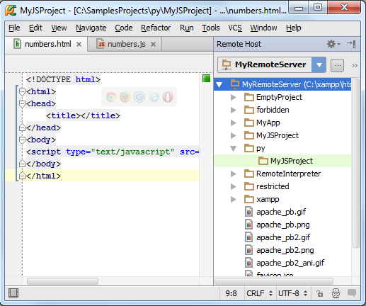
11、向服务器应用中部署文件
在Pycharm中这个操作非常简单。在主菜单中选择Tools → Deployment → Upload to MyRemoteServer，确保新目录C:\xampp\htdocs已经在服务器上顺利创建。
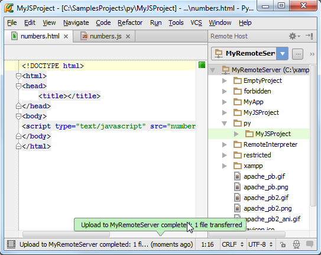
另一种方式可以通过右击文件，在快捷菜单中进行操作。当然二者都需要通过Upload to MyRemoteServer命令来完成。
12、调试
13、开始调试
开始调试后，将会在浏览器中显示你的HTML页面，同时调试窗口 Debug tool window开启。应有程序会在命中第一个断点的时候停止，并用蓝色标记代码行：
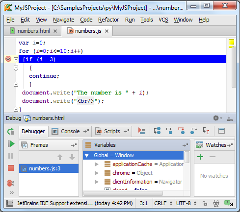
更多有关断点的信息参见product documentation中的Breakpoints部分。
对应用程序进行更为深入的调试，相关的调试信息会显示在调试窗口以及浏览器上：
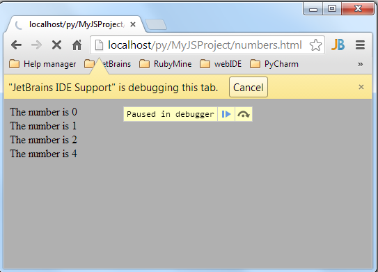
单击和控制代码的调试进程，通过关闭黄色标志或者单价Cancel按钮来终止调试。